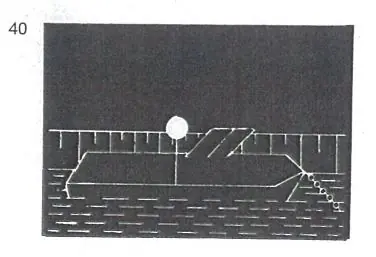
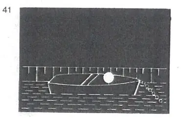

§ 3.20 Bezeichnung der Fahrzeuge beim Stilliegen (Anlage 3 Bild 40, 41)
Rheinschiffahrtspolizeiverordnung
1. | Mit Ausnahme der Kleinfahrzeuge und der in den §§ 3.22 und 3.25 genannten Fahrzeuge müssen alle Fahrzeuge beim Stilliegen bei Nacht führen: | |
ein von allen Seiten sichtbares weißes gewöhnliches Licht auf der Fahrwasserseite mindestens 3,00 m über der Ebene der Einsenkungsmarken. |  | |
Anstelle dieses Lichtes können auch zwei von allen Seiten sichtbare weiße gewöhnliche Lichter auf der Fahrwasserseite in gleicher Höhe auf dem Vor- und Hinterschiff gesetzt werden. | ||
2. | Kleinfahrzeuge - mit Ausnahme der Beiboote - müssen beim Stilliegen bei Nacht führen: | |
ein von allen Seiten sichtbares weißes gewöhnliches Licht auf der Fahrwasserseite. |  | |
3. | Das in den Nummern 1 und 2 vorgeschriebene Licht braucht nicht geführt zu werden, | |
a) | wenn das Fahrzeug zu einer Zusammenstellung von Fahrzeugen gehört, die voraussichtlich nicht vor dem Ende der Nacht aufgelöst wird und die Fahrzeuge dieser Zusammenstellung auf der Fahrwasserseite das Licht nach Nummer 1 führen; | |
b) | wenn sich das Fahrzeug in vollem Umfang zwischen nicht überfluteten Buhnen befindet oder hinter einem aus dem Wasser ragenden Längswerk stilliegt; | |
c) | wenn das Fahrzeug am Ufer stilliegt und von diesem aus hinreichend beleuchtet ist. | |
4. | Sind Fahrzeuge an einer besonders dafür ausgewiesenen Stelle zusammengezogen, kann die zuständige Behörde in Sonderfällen einen Teil von ihnen von der Lichterführung nach Nummer 1 oder 2 befreien. |